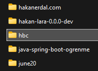
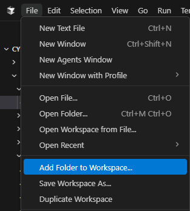
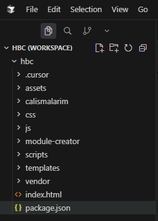
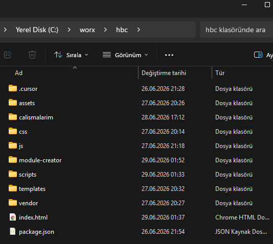

Kurulum ve Gereksinimler
Mockup üretimi ve task metinleri için bilgisayar hazırlığı
HBC ile mockup tasarlayıp Jira task metinlerini üretmek için Cursor kullanırsınız.
Bu sayfa, iş analisti bilgisayarında bir kez yapılacak kurulum adımlarını özetler.
Ne kurulmalı?
| Program | Gerekli mi? | Ne için? |
|---|---|---|
| Cursor | Evet | Mockup üretimi, düzeltme, isler.html task kutuları; HBC sihirbazlarından kopyalanan metinleri buraya yapıştırırsınız |
| Chrome | Evet | HBC'yi açmak, mockup gezmek, Sunum modu, Jira Tümünü kopyala |
| Python 3 | Evet | Cursor kurar — sohbete kurulum isteği yazmanız yeterli (Excel, harita, Bootstrap script'leri için). Siz python.org veya terminal kullanmazsınız |
HBC ve Cursor'ı açma
- HBC klasörünü bilgisayarınıza alın (git, zip veya paylaşımlı sürücü). Klasör adı
hbcolmalı; içindeindex.htmlvecalismalarimgörünür.
Dosya gezgininde hbc klasörü — üst klasör değil, doğrudan hbc. - cursor.com üzerinden Cursor'ı kurun ve oturum açın.
- Cursor'da File › Add Folder to Workspace… ile
hbcklasörünü ekleyin (üst klasör değil, doğrudanhbc).
File › Add Folder to Workspace… — ardından bir önceki görseldeki hbcklasörünü seçin. - Sol dosya ağacında
calismalarimgörünmeli — doğru klasörü eklediğinizi böyle anlarsınız.
Cursor sol panelinde hbcaltındacalismalarimlistelenmeli. - Dosya gezgininde
hbcklasöründekiindex.htmldosyasına çift tıklayın — Chrome'da Çalışmalarım açılır. Cursor'dan değil, Windows klasöründen açın.
index.html— dosya gezgininden çift tıklayın. - Günlük akış: Başlangıç rehberi — ekran sihirbazından veya özet sayfasındaki butonlardan metni kopyala → Cursor sohbetine yapıştır. Mockup düzeltme ve task güncelleme: sayfadaki Düzenle → panoya kopyala → Cursor'a yapıştır.
+ Yeni çalışma
Ana sayfadaki + Yeni çalışma butonu formu doldurduktan sonra Cursor'a yapıştırılacak metni panoya kopyalar. Metni Cursor sohbetine yapıştırın; klasör ve boş şablon Cursor tarafından oluşturulur. Ek program kurmanız gerekmez.
Python
Python'u kendiniz kurmanız gerekmez. HBC workspace'i açtıktan sonra Cursor sohbetine aşağıdaki gibi bir istek yazın; Cursor kurulumu ve gerekli paketleri halleder.
HBC mockup script'leri için Python 3 kurulumunu yap. Excel modüllerinde gerekirse openpyxl paketini de kur.
Bu adımı bir kez yapmanız yeterli. Sonrasında mockup üretirken Python veya terminal ile uğraşmazsınız.
İlk kontrol listesi
| Kontrol | Beklenen |
|---|---|
index.html açılıyor | Çalışmalarım kartları görünür |
| Örnek mockup (ör. Kaynaktan Musluğa) | Menü ve ekranlar gezinilebilir; Sunum çalışır |
| Cursor'da HBC workspace | Dosya ağacında calismalarim görünür |
Sorun giderme
| Belirti | Ne yapın? |
|---|---|
| HBC sayfası düz metin / stiller yok | Tek dosyayı değil, tüm hbc klasörünü koruyarak açın |
| + Yeni çalışma sonrası klasör yok | Panodaki metni Cursor sohbetine yapıştırdınız mı kontrol edin |
| Cursor «script» / Python hatası | Cursor'a yukarıdaki Python kurulum prompt'unu tekrar gönderin |
| Mockup'ta menü, buton veya seçim kutusu düzgün görünmüyor | Önce sayfayı yenileyin; düzelmezse mockup'ta Düzenle → Cursor'a neyin bozuk olduğunu kısaca yazın |
İlgili sayfalar
- Başlangıç rehberi — 4 adımlı akış, ekran sihirbazı
- Jira İş Açma — Text / Visual, Tümünü kopyala
- Çalışmalarım